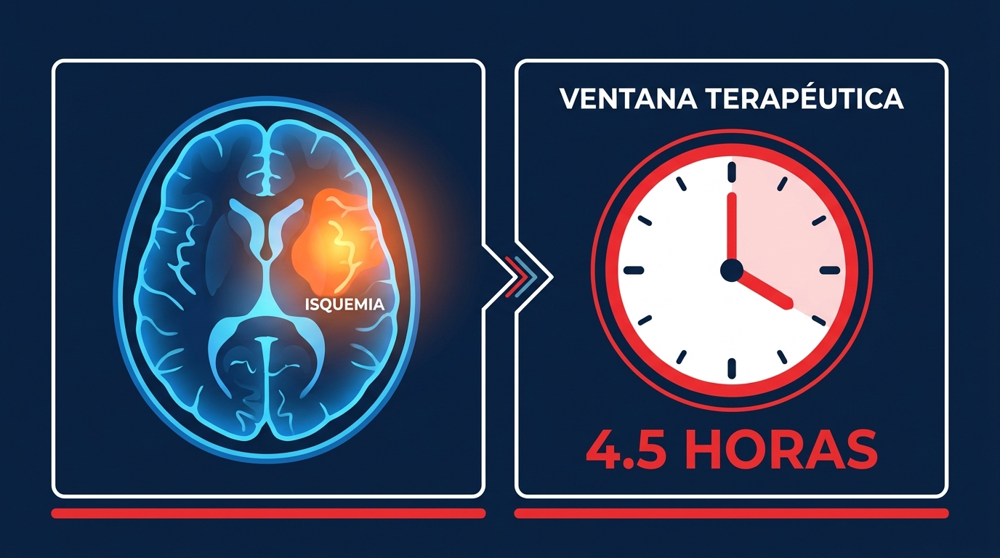
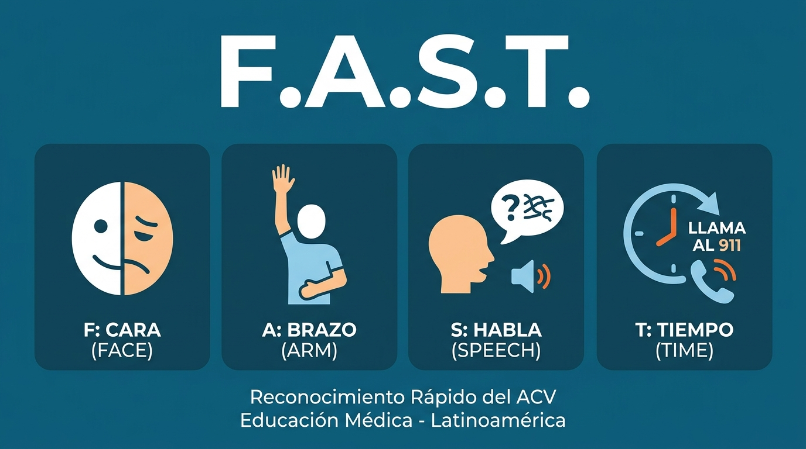
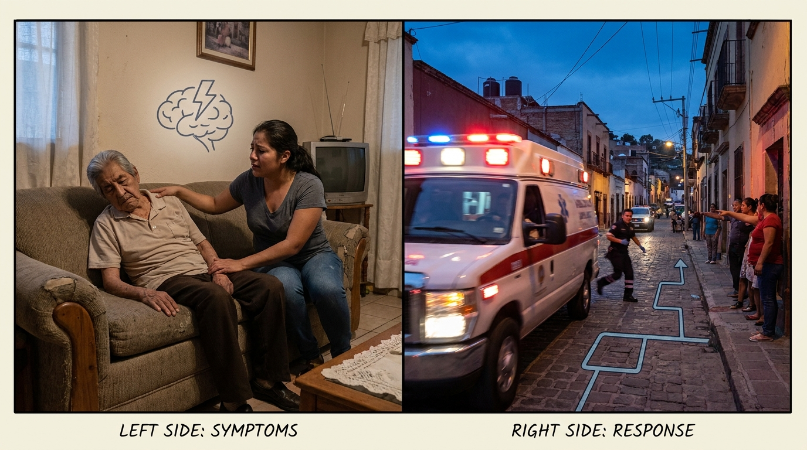

Cada 40 segundos, alguien en el mundo sufre un evento vascular cerebral. En México, es una de las principales causas de muerte y discapacidad. Y a diferencia de otros problemas de salud, aquí el tiempo no es solo un factor: es el tratamiento.
Un evento vascular cerebral ocurre cuando el flujo de sangre que llega al cerebro se interrumpe. Sin sangre, las neuronas empiezan a morir en minutos. Es así de simple y de brutal.
Hay dos tipos principales:
Ambos son emergencias médicas. Ambos requieren atención inmediata.

Durante un EVC, el cerebro pierde aproximadamente 1.9 millones de neuronas por minuto si no se restablece el flujo sanguíneo. Es una cifra que pone en perspectiva lo que significa "perder tiempo" en este contexto.
La buena noticia: existe tratamiento. La mala: tiene una ventana de tiempo muy estrecha.
Trombólisis (tratamiento con fármacos para disolver el coágulo): la ventana estándar es de hasta 4.5 horas desde el inicio de los síntomas. Cuanto antes se administre, mayor el beneficio. Los mejores resultados se obtienen dentro de las primeras 2 horas.
Trombectomía (procedimiento para retirar el coágulo mecánicamente): puede ofrecer beneficio hasta 6 horas después del inicio de los síntomas en casos seleccionados, dependiendo de la ubicación del coágulo y la condición del paciente.
Pasada esa ventana, las opciones de tratamiento se reducen drásticamente — y con ellas, las probabilidades de recuperación.
Los datos son difíciles de ignorar:
¿Por qué llega tan poca gente a tiempo? En la mayoría de los casos, porque no se reconocieron los síntomas o porque se optó por llevar al paciente al hospital por cuenta propia en lugar de llamar a emergencias.

F.A.S.S.T. es el acrónimo recomendado por la American Heart / American Stroke Association para que cualquier persona pueda identificar un posible EVC. La investigación de 2025 demostró que las personas que conocen F.A.S.T. tienen significativamente más probabilidades de llamar a emergencias ante un posible stroke.
Estudios recientes compararon F.A.S.T. con el acrónimo ampliado BE-FAST (que añade Balance y Eyes/vision). Ambos motivate a llamar a emergencias por igual, pero F.A.S.T. resultó más fácil de recordar para la población general. Si solo vas a recordar una cosa, que sea F.A.S.T.

Aquí es donde la gente pierde minutos preciosos:
Hasta el 80% de los EVC son prevenibles con cambios en el estilo de vida. Los factores de riesgo más importantes incluyen:
La revisión médica periódica y el control de estos factores reducen significativamente el riesgo. Pero incluso en personas sin factores de riesgo conocidos, un EVC puede ocurrir. Por eso la preparación — saber reconocer los signos y saber qué hacer — es tan importante.
Saber reconocer un EVC y actuar con urgencia puede ser la diferencia entre una recuperación completa y una discapacidad permanente — o entre la vida y la muerte.
En Asesores en Emergencias trabajamos para que más personas sepan responder ante emergencias médicas. Visítanos en www2.emergencias.com.mx o escríbenos a jperez@emergencias.com.mx.